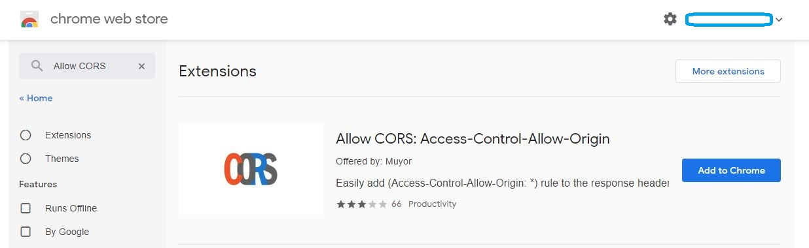
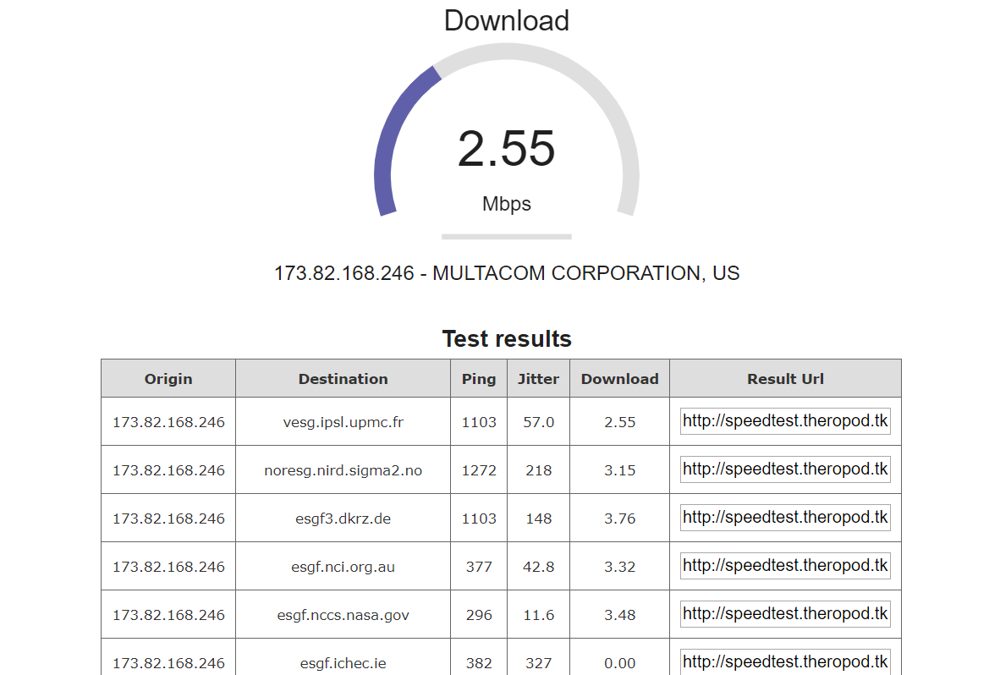

How to run this Speed Test
Step 1. Download, Install and Enable Allow Cors Access Control Extension
If you can access Chrome web store, just search 'Allow CORS' and install "Allow CORS: Access-Control-Allow-Origin" then activate the extension (Please refer the second harf of the next Animated GIF file)
If you cannot access Chrome web store, download the extension below
download the extension here
Step 2. Test all
Enter the speedtest page, and click 'test all' to run the test. You can also select any node you like and test its downloading speed by clicking 'test selected'. There will be an alert when all tests compelete

Step 3. Get Result
The test result will be shown as a table, and ID of each test is provided in the 'Result URL' column
Step 4.Remove the Extension
Since this extension is only designed for development, for security reasons, please remove "Allow CORS" Chrome extension after the test by right clicking the extension icon and select "Remove from Chrome".